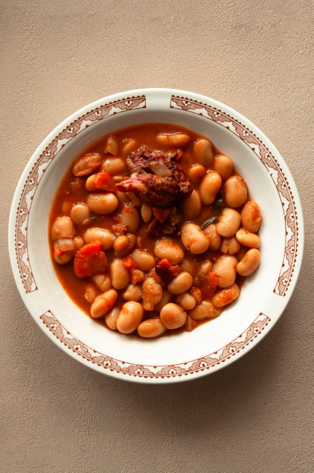

Home
Ham and Beans

Description
This ham and beans recipe was created by my mom, and I really enjoyed it as a child. As an adult,
my taste changed just a bit, so I modified her recipe to kick it up a bit. It is fabulous even
though the ingredients list is quite short! This is a must-make with leftover ham, and everyone
agrees it’s absolutely delicious.
Ingredients
- 1 pound dry great northern beans
- 1⁄2 pound cooked ham, diced
- 1 small onion, diced
- 1⁄2 cup brown sugar
- 1 tablespoon dried parsley
- 1⁄4 teaspoon cayenne pepper
- 6 cups water, or as needed to cover
- 1⁄2 teaspoon kosher salt, or to taste
- 1⁄2 teaspoon pepper, or to taste
Steps
- Gather all ingredients.
- Rinse beans; transfer to a large stockpot. Cover with cold water and let stand
overnight or at least 8 hours. Drain and rinse beans.
- Return beans to stockpot; add ham, onion, sugar, parsley, and cayenne pepper.
Pour in enough water to cover and season with salt and pepper.
- Bring to a boil; reduce heat to low and simmer until beans are tender, adding
more water if needed, about 1 1⁄2 to 2 hours.
- Serve and enjoy!